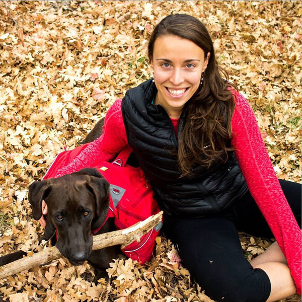
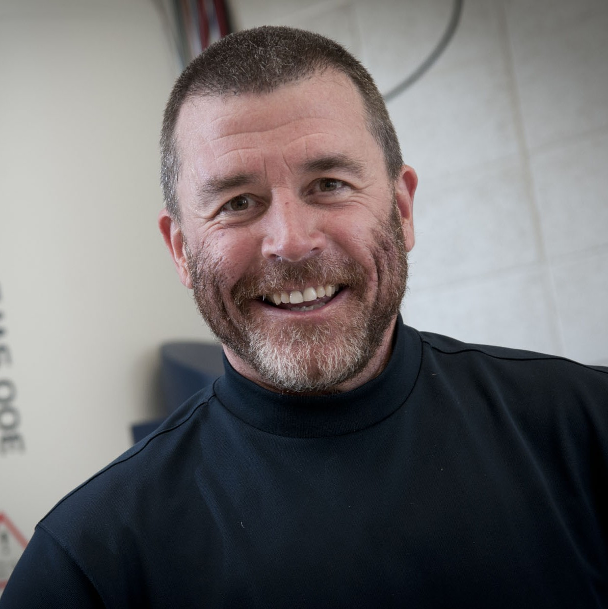

Board Members

Hilary Fabich
Hilary joined ABQMR in 2016 as a postdoctoral fellow after receiving her PhD in Chemical Engineering from the University of Cambridge. She became a staff scientist two years later, was elected vice president of ABQMR in 2019 and president in 2020. She is now also the president of New Mexico Resonance's board. Prior to starting her PhD, she had used MR to study bacterial and algal alginate gels at Montana State University and silica gels at Chalmers University, Sweden. She was funded by the Gates-Cambridge Scholarship and during her PhD she significantly enhanced the speed of the ultrashort echo time (UTE) pulse sequence. She was able to acquire 1D and 2D images of millisecond scale processes, and applied it to imaging of bubble dynamics in a model fluidized bed. At New Mexico Resonance and ABQMR she enjoys the challenges that each new project brings and is continually learning about the breadth of applications in which NMR can be useful.
h.fabich@abqmr.com

Stephen A. Altobelli
Steve received his Ph.D. at Ohio State (1982) in Aeronautical/ Astronautical Engineering. His expertise is NMR imaging, hydrodynamics, blood flow, and computing. He co-founded New Mexico Resonance and served as its president before joining ABQMR. He pioneered the use of NMR for the study of fluid flows such as of gases, porous media, and of non-Newtonian fluids, especially concentrated suspensions. He is a reviewer for Journal of Applied Physiology, Journal of Rheology, and ASME Transactions Biomedical Engineering, as well as DOE/SBIR proposals, and has been Adjunct Professor of Mechanical Engineering, University of New Mexico. Steve was elected president of ABMQR in 2019 and vice president in 2020.
salto@nmr.org

Eiichi Fukushima
Eiichi performed his first NMR experiment as a grad student at University of Washington in 1960. He worked at Los Alamos before coming to Lovelace Medical Foundation, Albuquerque, in 1985 to do flow NMR/MRI. Current projects include Earth's field NMR for detection of leaked oil in the arctic and development of portable single-sided NMR detector. He is past chair of AMPERE's Division of Spatially Resolved NMR was on the editorial board of Journal of Magnetic Resonance. He co-authored an early how-to NMR book that was published in 1981 and still in print (in 2016) and edited a collection of fundamental papers in biomedical NMR as well as co-edited several conference proceedings.
eiichi@abqmr.com

Joseph D. Seymour
Joe is co-director of the Magnetic Resonance Lab and Professor in the Chemical and Biological Engineering at Montana State University. His research interest is in transport imaging and quantification using MR. He received his PhD in Chemical Engineering from the University of California-Davis in 1994 measuring suspension rheology by MRI with Mike McCarthy and Bob Powell. He was an NSF International Program Postdoctoral Fellow in Physics at Massey University, New Zealand with Paul Callaghan studying porous media transport and Antarctic sea ice structure in the Earth's field by NMR 1995-1997. As a postdoc at the Lovelace Institute in New Mexico 1997-1998 with Eiichi Fukushima, Arvind Caprihan and Steve Altobelli he measured granular flow dynamics by MRI in the lab and joined Eiichi in Siberia to do Earth's field groundwater detection with Oleg Shushakov. He was a Staff Scientist at New Mexico Resonance 1998-2001. As a Humboldt Fellow with Rainer Kimmich at the University of Ulm, Germany 1999-2001, he studied percolation structure transport. He has been a Professor at Montana State University in Bozeman since 2001 and recently collaborated with Bernhard Blümich on low field NMR of biofilms in Yellowstone National Park.
jseymour@montana.edu